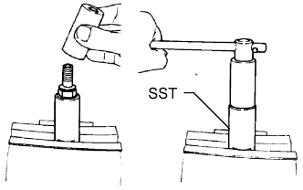

ТОПЛИВНАЯ ФОРСУНКА > РАЗБОРКА |
| 1. REMOVE RING PACKING SETTING NUT |
Remove the ring packing setting nut and washer.
| 2. REMOVE NOZZLE RETAINING NUT |
|  |
Using SST, remove the nozzle retaining nut.
| 3. REMOVE NOZZLE HOLDER PRESSURE SPRING |
| 4. REMOVE ADJUSTING SHIM |
| 5. REMOVE NOZZLE HOLDER PRESSURE PIN |
| 6. REMOVE NOZZLE DISTANCE PIECE |
| 7. REMOVE NOZZLE ASSEMBLY |